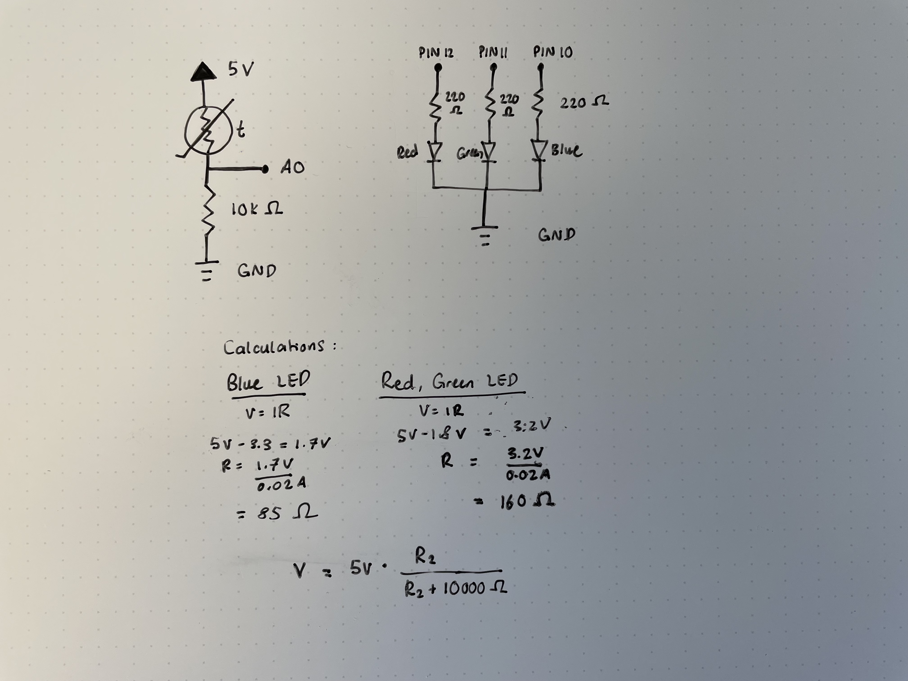

As someone who drinks a lot of coffee, I've often had a problem with drinking it at the right temperature and not burning my tongue. So I decided to use a thermistor and an LED to give an indication of when the coffee is cool enough to drink.
I used Red to indicate being too hot, Green to indiciate the perfect temperature, and Blue to indicate too cold.
Here is the schematics of this circuit board.
To convert from voltage and resistance to a temperature, I used Steinhart–Hart's equation and used variables from this example:

I used 220 Ohm resistors for the RGB LED and used a 10k Ohm resistor as a fixed resistor, in series with the thermistor.
The arduino code is below:
// pin for red in the RBG LED
const int R = 12;
// pin for green in the RBG LED
const int G = 11;
// pin for blue in the RBG LED
const int B = 10;
// pin for the thermistor
const int thermPin = A0;
// lower temperature limit for the ideal temperature to drink
const int lowerTemp = 80;
// upper temperature limit for the ideal temperature to drink
const int upperTemp = 100;
// known resistance amount connected to thermistor
const int R1 = 10000;
// variables for converting resistance to temperature using the Steinhart-Hart equation. I got these numbers from an online example.
float c1 = 1.009249522e-03, c2 = 2.378405444e-04, c3 = 2.019202697e-07;
void setup() {
// setting the pins to OUTPUT and INPUT depending on their usage.
pinMode(R, OUTPUT);
pinMode(G, OUTPUT);
pinMode(B, OUTPUT);
pinMode(thermPin, INPUT);
Serial.begin(9600);
}
void loop() {
// setting V0 as the variable to hold the information from reading thermPin, ie. the thermistor.
// Reading will be in voltage, ranging between 0 and 1023.
int V0 = analogRead(thermPin);
// calculations done to calculate R2, the resistance that corresponds to the voltage.
float R2 = R1 * ((1023.0 / (float)V0) - 1.0);
// converting R2 into a logarithm
float logR2 = log(R2);
// calculating Temperature (T) using the Steinhart-Hart equation
float T = (1.0 / (c1 + c2*logR2 + c3*logR2*logR2*logR2));
T = T - 273.15;
// converting Kelvin to Fahrenheit
T = (T * 9.0)/ 5.0 + 32.0;
// printing the temperature results into Serial
Serial.print("Temperature:");
Serial.print(T);
Serial.print(" F --> ");
// temperature between 80 and 100 mapped out and converted into a 0 - 255 scale for luminosity use.
// as the ideal temperature decreases, the brightness will also decrease, letting users know to drink quickly
int desiredTemp = map(T, 80, 100, 0, 255);
// if T is higher than the upper bound for ideal temperature, LED should be Red
if (T > upperTemp) {
analogWrite(R, 255);
analogWrite(G, 0); // set Green LED to 0
analogWrite(B, 0); // set Blue LED to 0
Serial.println("Don't drink - still too hot!"); // message output to tell users it's too hot
// if T is in the perfect range, light should be Green
} else if (T >= lowerTemp and T <= upperTemp) {
analogWrite(G, desiredTemp); // Green LED's brightness will continue to decrease as the desired temperature decreases
analogWrite(R, 0); // set Red LED to 0
analogWrite(B, 0); // set Blue LED to 0
Serial.println("Perfect temperature! Drink now!"); // message output to tell users it's the perfect temperature
// if T is lower than the lower bound of the ideal temperature, LED should turn Blue
} else if (T < lowerTemp) {
analogWrite(B, 255);
analogWrite(G, 0); // set Green LED to 0
analogWrite(R, 0); // set Red LED to 0
Serial.println("A little cold now. Maybe microwave it?"); // message output to tell users it's too cold
}
delay(2000); // delay 2 seconds in between each reading
}